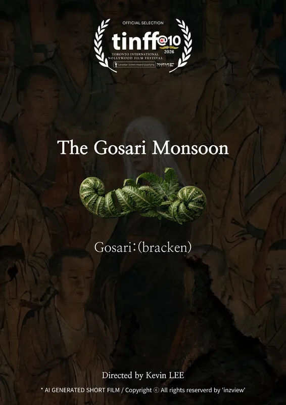

동아방송예술대학교
음향제작과 졸업 예정
어린 시절 게임이라는 걸 처음 접한 닌텐도로 커비, 포켓몬스터, 마리오, 젤다 같은 게임을 플레이하던 때 부터 제 귀를 사로잡은 것은 화려한 그래픽보다 아이코닉한 소리였습니다. 휴대용 게임기라는 기술적 한계로 엄청난 퀄리티를 가진 사운드는 아니었지만 효과 하나하나에 적용된 직관적이고 특징적인 효과음들은 수년이 지난 지금까지도 기억에 선명하게 남아있습니다.
이 경험은 제게 좋은 게임 사운드란 단순히 음질이 뛰어난 것을 넘어, 게임의 정체성을 부여하고 유저의 기억에 강렬하게 각인되는 것이라는 사실을 깨닫게 해주었습니다. 이후 대학에서 음향을 전공하며 기본적인 음향 지식과 Pro Tools 를 활용한 영상 매체의 Post Production 과정을 깊이 있게 탐구하며 사운드 디자이너로서의 기초를 탄탄히 다졌습니다.
Audiokinetic Wwise를 활용한 사운드 적용 (Wwise 101 취득)
Pro Tools를 기반으로 한 믹싱/에디팅 및 Soundminer를 활용한 라이브러리 워크플로우
Fabfilter, Kilohearts, Soundtoys, iZotope 등 플러그인을 활용한 사운드 디자인
음향제작과 졸업 예정
입사 동기
월드 오브 워크래프트, 로스트아크와 같은 MMORPG를 열심히 플레이하며 게임 사운드가 지닌 타격감과 상호작용의 힘에 완전히 매료되었습니다. 플레이어의 스킬에 맞춰 나오는 피드백과 디테일을 살려주는 여러 소리에서 영화나 드라마같은 영상 매체와는 다른 차원의 재미를 받았습니다.
학교를 다니며 Post Production 이라는 음향 후반 전공동아리 팀장직을 맡고, 특별한 인연으로 넷플릭스 오리지널 시리즈 '들쥐', 단편 영화 '종이집' 등의 영화 프로젝트를 거치며 에디팅과 믹싱으로 작품의 연출 의도를 살리는 역량을 키워왔습니다. 하지만 언젠가 제가 좋아했던 게임의 소리를 만들어 보고 싶다는 생각이 항상 들어왔습니다.
군 전역 후 지인의 소개로 전국 대학생 연합 게임 개발 동아리인 BRIDGE에 가입하여 실제로 게임 개발에 참여 해보며 말할 수 없는 재미를 느꼈고 내가 좋아하는게 직업이 되는 꿈을 다시 꾸기 시작했습니다.
입사 후 단순히 총 소리, 칼 소리를 만드는 것에 만족하지 않겠습니다. 기획 의도를 이해하고 이를 게임 내에서 가장 재미있게 구현해 내는 사운드 디자이너가 되고 싶습니다.
검술,격투 두 스킬의 캐릭터성을 구분하여 각각 다른 재미를 주려고 하였습니다. 특히 단순한 공격이 아닌 사이버틱한 에너지류의 소리와 실제적인 소리를 결합하는데에 집중했습니다.
UI와 전투 사운드가 동일한 게임에서 나오는 소리처럼 들리게 하고, 각 공격간의 재미있는 특징들을 살려주도록 하였습니다. 특히 스킬 차징/공격간 나오는 QTE가 뭍히지 않고 찰지게 들리는데에 집중했습니다.
시네마틱 트레일러의 여러 장면들과 전환을 재미있게 표현하려 했습니다. 플레이어와 적 크리쳐간의 이동과 거리에 따른 패닝/감쇠에 집중했고 빠르게 지나가는 장면들에 몰입감을 주는데 노력했습니다.
네온 그래픽에 맞는 Sci-fi한 느낌의 UI톤으로 통일하려 노력했고 뽑기 자체가 중요한 컨텐츠인 게임인 만큼 각 등급별 카드의 소리에 차등을 두어 재미있게 만들어 보려 했습니다.

아직 출시는 하지 못했지만 게임 개발 동아리 BRIDGE 에서 개발중인 인디 게임 'Way To The Rose (Unity)'의 전체 사운드 디자인과 Wwise 엔진 연동을 담당하고 있습니다.
뱀파이어 서바이벌류의 특징인 각각의 개성 있는 아이템 사운드와 맵에 등장하는 몬스터, UI 사운드 디자인을 진행했습니다. 올 해 일산 킨텍스에서 개최된 2026 PlayX4 인디씨드 부문에서 전시 후 유저들의 피드백을 보고 게임을 바라보는 여러 시선들에 대해 배웠습니다.

Wwise/Github를 활용하여 기획자와 프로그래머와의 소통하는 법을 연습하고 사운드 관련 작업을 분리 시키는 시도를 해보았습니다. Wwise 이벤트를 스프레드시트로 정리해서 소통과 적용을 원활하게 진행했습니다.모든 기능을 완벽하게 사용한 것은 아니지만 랜더마이징,컨테이너,RTPC 같은 기능들을 사용해서 일일이 수작업으로 하는 것 보단 효율적으로 소리의 변화를 적용하려 했습니다.



여기에 프로젝트에 대한 상세 설명이 들어갑니다.